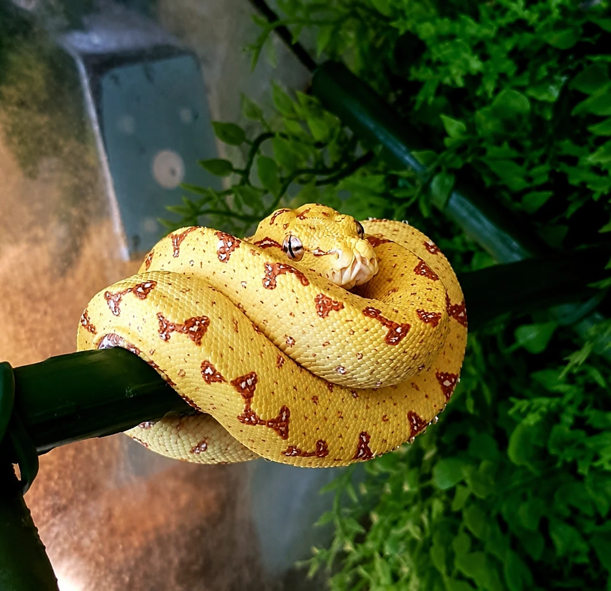
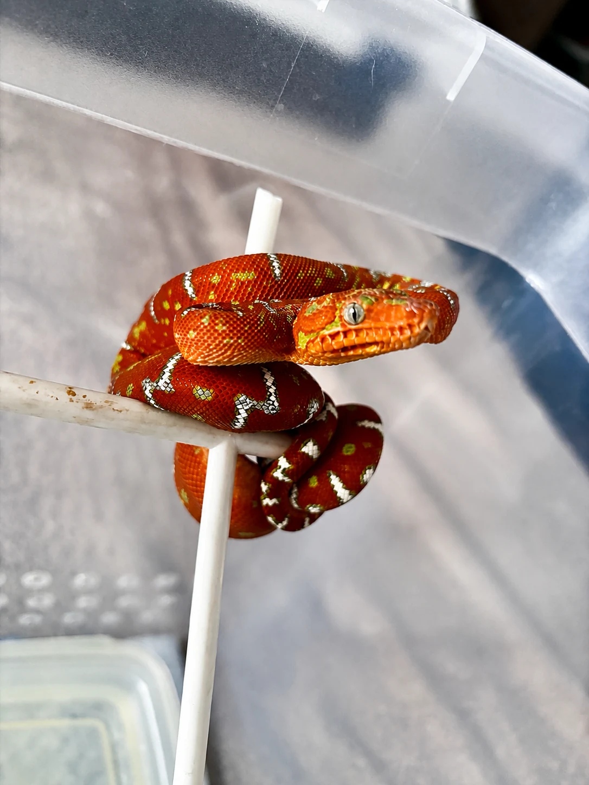
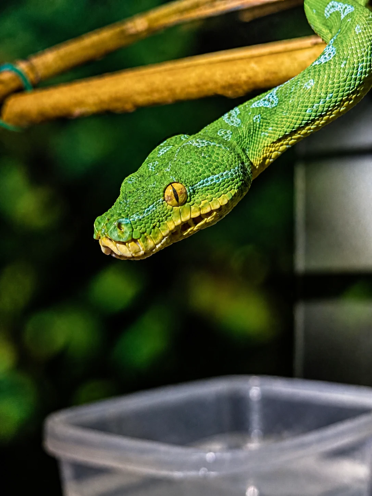
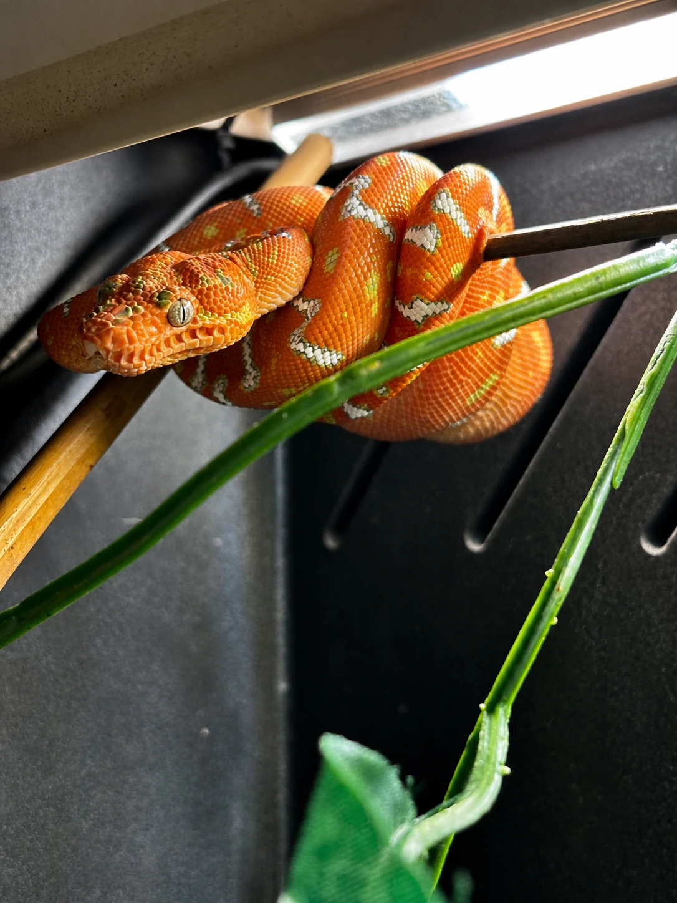
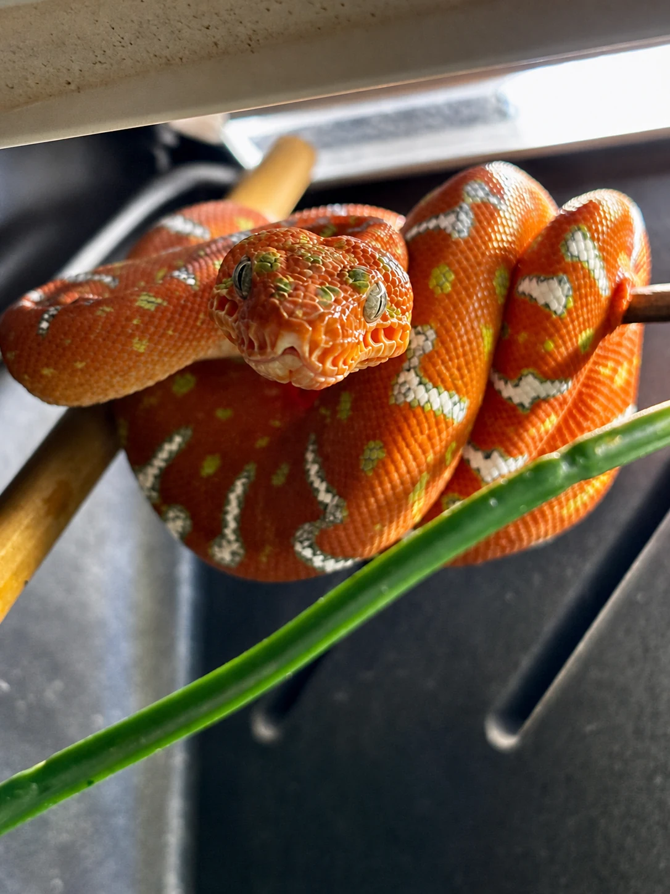
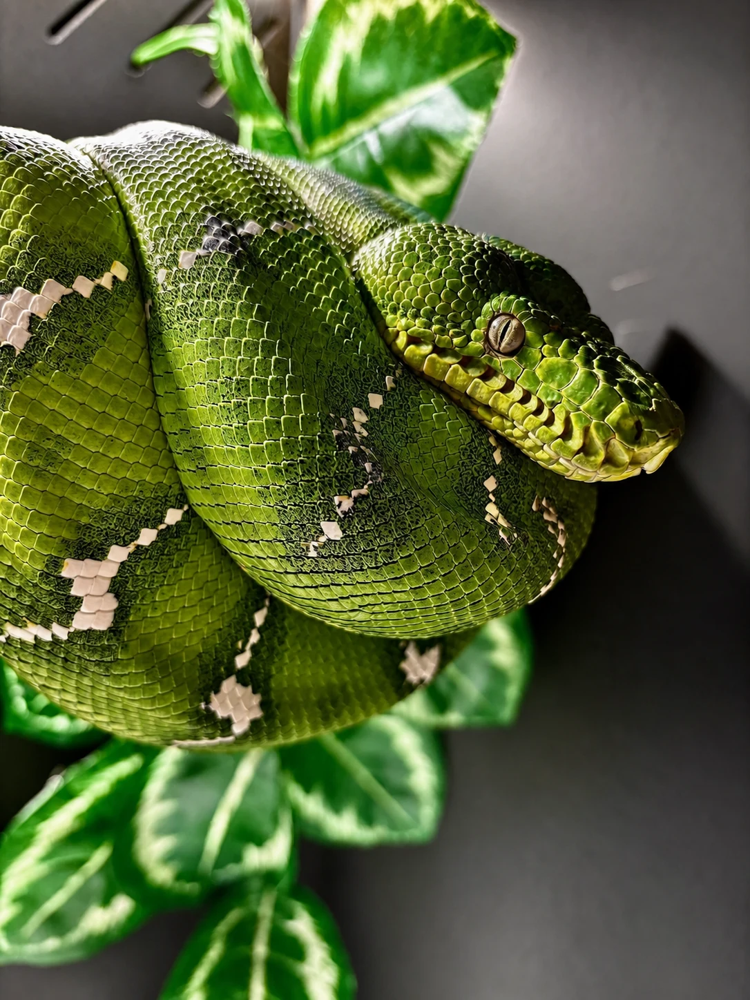
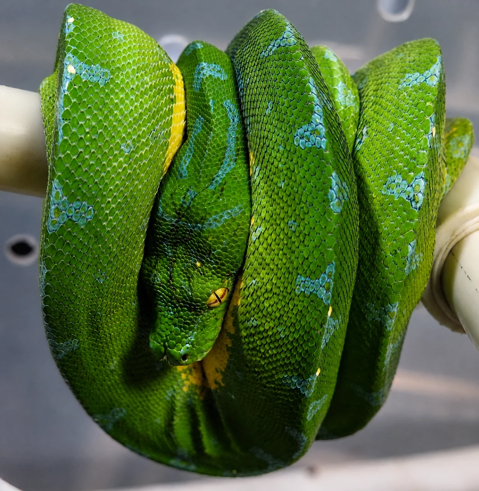

NAJWAŻNIEJSZY WNIOSEK
Zdrowia nie potwierdza kolor, cena, marka hodowli ani jedno efektowne zdjęcie. Dobry zakup opiera się na zgodności trzech warstw: tożsamości i legalnego pochodzenia, udokumentowanej historii funkcjonowania oraz aktualnego stanu zwierzęcia.
Nie kupujesz fotografii węża. Kupujesz jego historię biologiczną — razem z ryzykiem, którego na fotografii może jeszcze nie być widać.
Nazwa naukowa, pochodzenie, data urodzenia, rodzice lub linia i ciągłość dokumentów.
Datowany zapis karmień, masy, wylinek, kału, leczenia i ewentualnych zwrotów pokarmu.
Aktualny film, zdjęcia bez filtra, badanie kliniczne oraz testy dobrane do ryzyka.
Brak widocznych objawów nie wyklucza zakażenia ani choroby we wczesnej fazie. Zwierzę z objawami oddechowymi, neurologicznymi, zmianami w jamie ustnej, znaczną utratą masy albo nawracającymi zwrotami pokarmu wymaga badania przez lekarza weterynarii zajmującego się gadami.
KROK 1 • WIEDZ, CO KUPUJESZ
Nazwa handlowa nie wystarcza
„Pyton zielony”, „chondro”, „Aru” czy „Sorong” mogą w ogłoszeniu brzmieć precyzyjnie, lecz nie są dowodem pochodzenia. Współczesna systematyka rozdziela południowe Morelia viridis i północne Morelia azurea, a nazwy lokalności w handlu opisują deklarowaną linię geograficzną. Lokalność potwierdza dokumentowany rodowód, nie kolor młodego ani wygląd dorosłego.
Tak samo Corallus caninus i Corallus batesii są odrębnymi gatunkami. Ogólne zasady oględzin i bioasekuracji mogą być wspólne, ale parametrów utrzymania, wielkości, pochodzenia i praktyki rozrodu C. batesii nie wolno automatycznie przenosić na C. caninus.
Poproś o datę wyklucia lub urodzenia, identyfikację rodziców i historię miotu. Sam skrót „captive bred” niczego nie dokumentuje.
W handlu pytonami zielonymi opisy pochodzenia bywały wykorzystywane do legalizowania osobników odłowionych. Liczy się ścieżka dokumentów.
Wiarygodność budują znani założyciele, identyfikacja rodziców i nieprzerwana dokumentacja kolejnych pokoleń.
Osobnik rzeczywiście urodzony w niewoli, od hodowcy pokazującego rodziców i warunki, z indywidualnym numerem, datą urodzenia, historią karmień oraz dokumentem legalnego pochodzenia. Badania nad handlem Morelia viridis pokazują, dlaczego deklaracja „hodowlany” bez identyfikowalnej historii nie powinna kończyć weryfikacji.


KROK 2 • ŻĄDAJ DANYCH
Co uczciwy sprzedawca powinien umieć pokazać
Doświadczeni hodowcy pytonów zielonych publikują indywidualne karty zwierząt z datą wyklucia, pochodzeniem, masą i sposobem pobierania pokarmu. To nie gwarantuje zdrowia, ale tworzy audytowalny punkt wyjścia. Brak odpowiedzi na proste pytania jest informacją równie ważną jak sama odpowiedź.
- 01Aktualny, nieedytowany film
Poproś o jedno ciągłe nagranie zwierzęcia w spoczynku i podczas spokojnego poruszania się. Ma być widoczny oddech, zamknięty pysk, praca języka, chwyt żerdzi, obie strony ciała, głowa i okolica kloaki. Film powinien zawierać bieżącą datę lub uzgodniony znak.
- 02Pełny dziennik karmień
Daty, rodzaj i orientacyjna wielkość pokarmu, żywy czy rozmrożony, samodzielne pobranie czy karmienie wspomagane, odmowy oraz ostatni posiłek. „Je regularnie” bez zapisu jest opinią, nie historią.
- 03Trend masy, nie pojedynczy wynik
Poproś o kilka datowanych pomiarów. Jedna masa nie pokazuje, czy zwierzę rośnie, stoi w miejscu czy traci kondycję.
- 04Wylinki, kał i zwroty pokarmu
Daty wylinek, informacja o kompletności, defekacjach, pasożytach i każdy epizod regurgitacji — z opisem okoliczności i leczenia. U nadrzewnych dusicieli historia jest ważniejsza niż efektowne „zdjęcie dnia”.
- 05Leczenie i wyniki badań
Pełna nazwa badanego czynnika, data, laboratorium, materiał i metoda. „Testowany” bez tych danych nie pozwala ocenić, co naprawdę zbadano.
- 06Historia całej kolekcji
Nowe przypadki chorób oddechowych lub neurologicznych, zgony, kwarantanna importów, wspólne narzędzia i ostatnie przyjęte zwierzęta. Ryzyko pochodzi z systemu, nie tylko z jednego terrarium.
U młodego oznacza udokumentowaną serię samodzielnie przyjętych, odpowiednio rozłożonych posiłków, prawidłowe trawienie i stabilny albo rosnący trend masy. Liczba bez dat, sposobu karmienia i informacji o zwrotach pokarmu jest pozorną precyzją.

KROK 3 • OGLĘDZINY
Co można zobaczyć — i czego nie wolno z tego wnioskować
Podczas badania węża lekarz ocenia skórę, głowę, oczy, nozdrza, dołki termiczne, jamę ustną, powierzchnię brzuszną i okolicę kloaki. Kupujący może wykonać podobny screening, ale nie powinien na jego podstawie „wykluczać choroby”. Szukamy sygnałów wymagających wyjaśnienia.
Pysk zamknięty w spoczynku. Brak pęcherzyków i wydzieliny w nozdrzach, ślinienia, klikania, świstu oraz widocznego wysiłku. Oddychanie z otwartym pyskiem w spoczynku jest objawem alarmowym.
Okulary przejrzyste i gładkie, bez jednostronnego zmętnienia, zapadnięcia, obrzęku czy zalegającej wylinki. Nozdrza i dołki termiczne czyste, bez strupów i wydzieliny.
Błona śluzowa bez obrzęku, punktowych krwawień, martwiczych zmian, gęstej wydzieliny i serowatych nalotów. Nie otwieraj pyska na siłę bez umiejętności — poproś o badanie lekarza.
Brak ran, pęcherzy, nadżerek, ognisk martwicy i zatrzymanej wylinki. Roztocza często kryją się przy oczach, dołkach termicznych, pod żuchwą, w fałdach i przy kloace; mogą też być widoczne w misce.
Symetryczne poruszanie, celny ruch głowy, regularna praca języka oraz pewny chwyt żerdzi. Drżenia, „stargazing”, skręt szyi, utrata równowagi i niemożność prawidłowego owinięcia są czerwonymi flagami.
Spójna z wiekiem i historią. Bez ostro wystających kręgów, asymetrycznych obrzęków i nagłej utraty masy. Sam test fałdu skórnego nie jest wiarygodnym rozpoznaniem nawodnienia.
Długie nieruchome spoczywanie jest typowe. Stałe unoszenie przedniej części ciała, wyciąganie szyi do oddychania, leżenie na dnie, brak chwytu albo otwarty pysk w spoczynku nie powinny być tłumaczone samym temperamentem gatunku.


MORELIA I CORALLUS • INNE PUNKTY CIĘŻKOŚCI
Ta sama lista kontrolna, różne ryzyka
| Obszar | Pyton zielony | Corallus caninus | Wniosek kupującego |
|---|---|---|---|
| tożsamość | Sprawdź, czy sprzedawca rozróżnia M. viridis, M. azurea, lokalność i linię designerską. | Sprawdź, czy zwierzę jest rzeczywiście C. caninus, a nie C. batesii albo hybrydą bez jasnego opisu. | Rodowód i dokumenty są ważniejsze niż fenotyp. |
| młode | Ustalenie samodzielnego karmienia bywa trudne; żądaj pełnego zapisu, nie liczby bez kontekstu. | Powolny metabolizm zwiększa znaczenie odstępów, trawienia, defekacji i historii zwrotów pokarmu. | Nie kupuj młodego „do rozkarmienia”, jeśli nie masz zaplecza i doświadczenia. |
| oddech | Serpentowirus został bezpośrednio związany z ciężkim zapaleniem płuc u Morelia viridis. | Objawy oddechowe są równie alarmowe, ale nie przypisuj ich automatycznie temu samemu patogenowi bez diagnostyki. | Objaw jest wskazaniem do badania, nie nazwą choroby. |
| historia | Zapytaj o choroby oddechowe, importy i badania w całej kolekcji. | Zapytaj szczególnie o regurgitacje, sposób karmienia, zaparcia/defekacje i wcześniejsze leczenie. | Historia ukryta za „je i jest zdrowy” decyduje o ryzyku. |
| husbandry | Nie kupuj, zanim stabilne terrarium i kwarantanna działają przed przyjazdem zwierzęcia. | Nie kopiuj ustawień dla C. batesii; C. caninus wymaga własnego planu. | Zakup nie jest początkiem budowy systemu — jest jego testem końcowym. |
Jörg Riethausen podkreśla powolny metabolizm i fakt, że problemy u Corallus mogą stać się widoczne późno. To praktyczny argument za analizą wielu tygodni lub miesięcy danych, a nie wyłącznie stanu w dniu sprzedaży. Jego doświadczeń dotyczących C. batesii nie traktujemy jednak jako automatycznych parametrów dla C. caninus.
KROK 4 • MEDYCYNA OPARTA NA RYZYKU
„Ujemny” nie znaczy „wolny od wszystkiego”
Test ma znaczenie tylko wtedy, gdy wiadomo: czego szukano, jaką metodą, z jakiej próbki, kiedy ją pobrano i co działo się w kolekcji przed oraz po pobraniu. Jednorazowy ujemny wynik nie jest dożywotnim certyfikatem, a przypadkowy panel nie zastępuje badania klinicznego.
Serpentowirus
U pytonów zielonych opisano ciężkie, nawet śmiertelne zapalenie płuc związane z serpentowirusem. O strategii PCR, rodzaju próbki i terminie decyduje lekarz na podstawie pochodzenia i historii kolekcji.
Reptarenawirus / BIBD
Badania u boa i pytonów pokazują możliwość zakażeń subklinicznych. Nie oznacza to potwierdzonej częstości u C. caninus; uzasadnia natomiast pytanie o zdrowie całej kolekcji i plan testów.
Cryptosporidium
Czułość zależy od materiału. Badania wskazują, że przy przesiewie węży wymaz lub popłuczyny z żołądka mogą być czulsze niż wymaz kloakalny; pobranie powinien zaplanować lekarz.
Pasożyty i kał
Badanie kału ma sens w kontekście świeżości próbki, cyklu wydalania i historii leczenia. Pojedynczy wynik może wymagać powtórzenia.
Badanie kliniczne
Ocena jamy ustnej, oddechu, skóry, kondycji i neurologii wyznacza kierunek diagnostyki. Panel laboratoryjny bez badania może testować nie to, co najważniejsze.
Bez leczenia „na wszelki wypadek”
Profilaktyczne podawanie antybiotyków lub leków przeciwpasożytniczych bez rozpoznania może zaszkodzić, utrudnić diagnostykę i obciążyć zwierzę.
Wydzielina, pęcherzyki, świsty, otwarty pysk w spoczynku lub zwiększony wysiłek oddechowy nie są sytuacją „do obserwacji po zakupie”. Zwierzę powinno najpierw otrzymać diagnostykę i udokumentowane leczenie u obecnego opiekuna.
DECYZJA • NIE EMOCJA
Zielone, żółte i czerwone flagi sprzedawcy
Dane przed zaliczką
Sprzedawca przesyła dokumenty, aktualny film i dziennik karmień, pokazuje rodziców oraz odpowiada konkretnie również na niewygodne pytania.
Granice pewności
Nie obiecuje końcowego koloru, płci bez wiarygodnego oznaczenia, „stuprocentowego zdrowia” ani lokalności wyłącznie z wyglądu.
Braki do wyjaśnienia
Niepełny zapis masy, niejasna metoda karmienia, dawne leczenie bez dokumentacji lub test opisany bez próbki i daty. Transakcję wstrzymaj do wyjaśnienia.
Presja czasu
„Tylko dziś”, natychmiastowa zaliczka, odbiór bez dokumentów albo odmowa nagrania bieżącego filmu. Rzadkość zwierzęcia nie unieważnia audytu.
Objawy lub manipulacja
Oddychanie z otwartym pyskiem, śluz, neurologia, roztocza, regurgitacje bez diagnostyki, wyraźna utrata masy albo fotografie z filtrami ukrywającymi stan skóry.
Brak legalnego pochodzenia
Dokument „będzie później”, inna nazwa gatunku, niezgodne dane sprzedawcy lub niemożliwa do prześledzenia historia importu. Nie kupuj.
Na giełdzie obowiązują te same standardy. Obejrzenie zwierzęcia na żywo jest zaletą, ale tłum, ciepło, transport i presja innych kupujących nie są powodem do pomijania dokumentów.
POLSKA • CITES • REJESTRACJA
Dokumenty są częścią zdrowego zakupu
Pytony zielone oraz Corallus caninus są objęte regulacjami CITES i unijnymi przepisami o handlu dziką fauną. W Polsce żywe gady z odpowiednich załączników podlegają rejestracji u właściwego starosty. Oficjalna usługa gov.pl wskazuje termin 14 dni od powstania obowiązku na złożenie wniosku o wpis albo wykreślenie.
Powinny zgadzać się co najmniej: nazwa naukowa, liczba i opis osobników, data oraz podstawa nabycia, dane zbywcy i nabywcy, źródło pochodzenia oraz ciągłość dokumentów. Przy zakupie zagranicznym wymagania zależą od kraju, załącznika i kierunku przewozu — potwierdź je przed transportem, nie po nim.
Dokument sprzedaży warto uzupełnić o indywidualny numer zwierzęcia, datę urodzenia, identyfikację rodziców, deklarowaną lokalność lub linię, płeć i metodę oznaczenia, ostatnią masę, ostatni posiłek oraz listę przekazanych wyników badań. To chroni obie strony i ogranicza zamianę osobników.
KROK 5 • CHROŃ CAŁĄ KOLEKCJĘ
Kwarantanna zaczyna się przed przyjazdem
Oficjalny przewodnik bioasekuracji dla gadów opublikowany w 2025 roku przez NSW zaleca zakładać, że każde nowe zwierzę może przenosić chorobę, oraz utrzymywać nowe węże w kwarantannie przez co najmniej sześć miesięcy. To nie polski przepis i nie magiczny termin dla każdego przypadku — jest konserwatywnym punktem odniesienia, który lekarz dostosowuje do pochodzenia, objawów i wyników.
- 01Oddzielna przestrzeń
Najlepiej osobny pokój i brak wspólnego obiegu powietrza. Jeśli to niemożliwe, maksymalny dystans, bariery i rygorystyczna kolejność obsługi.
- 02Proste, zmywalne wyposażenie
Papier jako podłoże, łatwe do dezynfekcji żerdzie i kryjówki. Wystrój nie może uniemożliwiać obserwacji kału, wylinki, roztoczy i regurgitacji.
- 03Osobne narzędzia
Pęsety, pojemniki, rękawice, ręczniki i środki czyszczące oznaczone tylko dla kwarantanny. Najpierw obsługuj kolekcję rezydentną, na końcu nowe zwierzę.
- 04Dziennik każdego dnia
Temperatury, zachowanie, oddech, masa, karmienia, kał, wylinki i wszystkie nieprawidłowości. Trend wykrywa problem wcześniej niż pamięć.
- 05Plan z lekarzem
Badanie kliniczne oraz harmonogram powtórnych testów zależny od ryzyka. Objaw lub nowe narażenie mogą przedłużyć albo rozpocząć kwarantannę od nowa.
Dwa zbiorniki w tym samym pomieszczeniu, obsługiwane tymi samymi rękami i narzędziami, nadal tworzą drogi przenoszenia patogenów. Kwarantanna jest procedurą bioasekuracji, nie nazwą pojemnika.


CHECKLISTA DO ZAPISANIA
Zakup dopiero wtedy, gdy wszystkie pola są zamknięte
Jedno puste pole nie zawsze dyskwalifikuje zwierzę. Niewyjaśnione pole zawsze wstrzymuje zakup.
SZYBKIE ODPOWIEDZI
FAQ kupującego
Czy ze zdjęcia można potwierdzić, że wąż jest zdrowy?
Nie. Zdjęcie służy do wstępnego screeningu. Ocena wymaga historii, aktualnego filmu, badania klinicznego i — zależnie od ryzyka — właściwie dobranych testów.
Czy ujemny PCR oznacza, że mogę pominąć kwarantannę?
Nie. Wynik dotyczy konkretnego czynnika, próbki i momentu. Nie wyklucza innych patogenów, zakażenia poniżej progu wykrycia ani ekspozycji po pobraniu.
Ile posiłków powinien przyjąć młody przed sprzedażą?
Nie istnieje jedna liczba dla każdego osobnika. Szukaj serii samodzielnych, prawidłowo strawionych posiłków z datami, rozsądnymi odstępami i stabilnym trendem masy. Sposób karmienia jest równie ważny jak suma.
Czy młody żółty albo czerwony pyton wygląda „choro”?
Nie z powodu samej barwy. Żółty i czerwony/maronowy są prawidłowymi fenotypami młodocianymi w kompleksie pytona zielonego. Zdrowie ocenia się niezależnie od ontogenetycznego koloru.
Czy mogę kupić węża z roztoczami i wyleczyć go w domu?
To ryzyko dla całej kolekcji i potencjalny sygnał problemów bioasekuracyjnych u sprzedawcy. Najbezpieczniej odroczyć zakup do skutecznego leczenia, ponownej oceny i udokumentowanego okresu bez pasożytów.
Czy Corallus batesii i C. caninus ocenia się tak samo?
Ogólne oględziny są podobne, ale to odrębne gatunki. Parametry hodowlane i dane biologiczne C. batesii nie są automatycznie zaleceniami dla C. caninus.
Jak długo powinna trwać kwarantanna?
Plan ustala lekarz na podstawie ryzyka. Aktualny przewodnik NSW rekomenduje dla węży co najmniej sześć miesięcy; jest to standard referencyjny bioasekuracji, a nie polski przepis ani gwarancja.
ŹRÓDŁA I GRANICE WNIOSKOWANIA
Na czym oparto ten wpis
Priorytet otrzymały źródła weterynaryjne, recenzowane badania patogenów, oficjalne wytyczne bioasekuracji i polskie materiały prawne. Materiały hodowców wykorzystano do oceny praktyki sprzedaży, dokumentacji i specyfiki rozkarmiania — nie jako zamiennik dowodów medycznych.
Medycyna weterynaryjna i badania recenzowane
- MSD Veterinary Manual — Clinical Procedures for Reptiles. Elementy badania skóry, głowy, oczu, nozdrzy, jamy ustnej i oddechu.
- MSD Veterinary Manual — Selecting a Reptile. Wstępny screening przed zakupem.
- MSD Veterinary Manual — Parasitic Diseases of Reptiles. Lokalizacja i wykrywanie roztoczy węży.
- Hoon-Hanks i wsp. (2017), J Virol. Związek serpentowirusa z proliferacyjnym zapaleniem płuc u pytonów zielonych.
- Bodewes i wsp. (2020) — Serpentoviruses: More than Respiratory Pathogens. Zakres zmian związanych z serpentowirusami.
- Windbichler i wsp. (2024) oraz Keller i wsp. (2020). Zakażenia subkliniczne reptarenawirusami i znaczenie badań kolekcji.
- Pees i wsp. (2024). Porównanie materiału do diagnostyki Cryptosporidium serpentis u węży.
Bioasekuracja i prawo
- NSW Government (2025) — Hygiene and care for preventing disease in captive reptiles. Aktualne zasady kwarantanny, oddzielenia sprzętu i kolejności obsługi.
- Gov.pl — rejestracja zwierzęcia objętego ograniczeniami. Termin i procedura rejestracyjna w Polsce.
- RDOŚ Poznań — regulacje dotyczące gatunków CITES. Wymogi dokumentowania legalnego pochodzenia.
Praktyka hodowlana i pochodzenie
- ViridisPython — sposób opisu oferowanych pytonów zielonych oraz materiał o rozkarmianiu młodych. Przykłady indywidualnych danych i trudności w ustaleniu karmienia.
- Rozmowa z Vladimirem Odinchenko. Doświadczenia z osobnikami odłowionymi i urodzonymi w niewoli.
- Morelia Viridis Forum — GTP Husbandry Guide. Znaczenie przygotowania i wyboru źródła przed zakupem.
- Jörg Riethausen — Medizin oraz Haltung. Wieloletnia praktyka z Corallus, powolny metabolizm i monitoring młodych.
- CITES — case study: trade in Morelia viridis. Ryzyko związane z pochodzeniem i handlem.
- Lyons & Natusch (2011) — Wildlife laundering through breeding farms. Recenzowana analiza deklarowanego pochodzenia zwierząt w handlu.
Stan źródeł i odnośników sprawdzony 22 sierpnia 2026. Wytyczne medyczne i prawne mogą się zmieniać — przed zakupem potwierdź aktualny stan u lekarza weterynarii oraz właściwego urzędu.
ODPOWIEDZIALNA DECYZJA
Najlepszy zakup to ten, z którego możesz się wycofać
Rzadki wąż nie jest okazją, jeśli sprzedawca nie pokazuje jego historii. Cierpliwość przed zakupem chroni zwierzę, Twoją kolekcję i lata pracy hodowlanej.
WRÓĆ DO PUBLIKACJI →